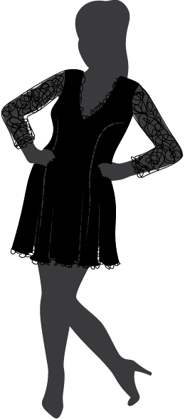
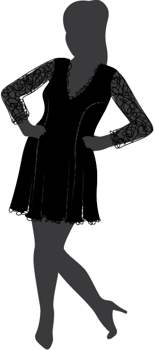

Pick a dress
Click on a dress in the closet to see what it looks like on.
 

Click on a dress in the closet to see what it looks like on.
I made this dress myself. It has a flowy handkerchief skirt and a small cut-out in the front. It's the perfect dress for hot summer days.
I got this beatiful dress from a store called "All Things Vintage." The cute sparkles on the top are the perfect accent for the long dark dress. And it is so soft!
This dress is super simple. The fabric is a comfortable stretchy knit. It has a cute flare skirt and 3/4 sleeves.
This little black dress is perfect for all occasions. It has a deep "V" neckline and a layer of lace to make it a little eunique.
It's not exactly a dress, but this over-sized flanel shirt fits like a dress. It falls to about mid-thigh, and is perfect for lounging in.